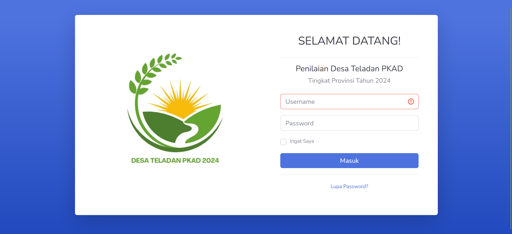
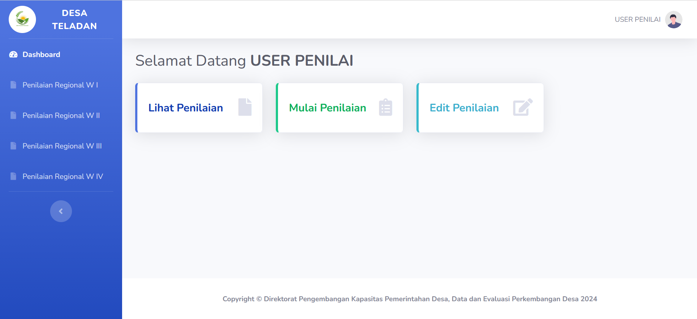

Desa Teladan PKAD
A simple website for assessing exemplary villages in the context of evaluating village development at the National by Regional level



This is the website used for the administrative assessment process for selecting outstanding villages and sub-districts in 2024 at the regional level. This is for personal use and is not published to the public.
I built this in 2024 as a continuation from 2023 but more refined and adapted to the instruments and needs in 2024.
I used the newest Laravel framework at this project. It's not something new for me, because I have previously used Laravel. I feel better working on this project now. Moreover, at that time I was pregnant, of course several pregnancy symptoms made me quite challenged to be able to complete this more quickly than before. I already understand many things, how to create a fast database and process data with PHP more efficiently so that it can be displayed as needed. I am quite satisfied with the results of this project, because almost everything is perfect and on target. I still use phpMyadmin. I hosted the website on a web home platform, I learned some ways to use cpanel to manage the web server.
This website is very helpful in the process of assessing the selection of outstanding villages and sub-districts in 2024 because of its flexibility and ease in digitizing forms and easier document links without having to go back and forth through files to check and validate documents according to the instrument. It's just that this website is no longer active, because the project has been completed and hosting has not been extended for further work and due to the limited budget and changes in the activity program implementation scheme in the sub-directorate, this website hosting cannot be extended.
Computer Specialist (Pranata Komputer – First Expert Level) Ministry of Home Affairs, Indonesia

Erma Yuli Clara Saragih
Project information
- Category Web Development
- Client Sub Directorate of Village Development Evaluation
- Project date 01 May, 2024